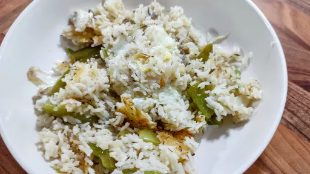

Mediterranean style fried rice with anchovy dressing
45 mins
Serves 2
Mediterranean

This Mediterranean take on fried rice has all the crispy and salty bits as well as the very best bit: the crispy 'tahdig' layer at the bottom of the pan. 'Tahdig' is the Persian word referring to the bottom of the pot, where the rice forms a crunchy golden layer of crispy decadence. Also called 'socarrat' in Spain, this scorched rice is the part we look forward to the most.
Ingredients
60ml olive oil
1
green pepper, stem and seeds discarded and flesh cut roughly into 3 cm cubes
6small cloves garlic, peeled
1
mild red chilli, halved lengthways
4
spring onions, white and green parts separated, each cut into 3 cm lengths
5g thyme leaves, with their soft sprigs
350g cooked basmati rice
2
eggs
Anchovy Dressing
15g anchovies in oil (about 5), drained and finely chopped
2cloves garlic, crushed
½tsp cumin seeds, roughly crushed with a pestle and mortar
2tbsp olive oil
1
lemon: finely shave the skin to get 6 strips and then juice to get 1½ tbsp
1tbsp roughly chopped parsley leaves
salt and black pepper
Instructions
Make the anchovy dressing by putting the anchovies, garlic, cumin, oil and a good grind of pepper into a small saucepan on a medium heat. As soon as the mixture starts to bubble, remove it from the heat and add the lemon juice. Set aside to cool, then stir in the parsley.
Put 1 tablespoon of oil into a large frying pan, for which you have a lid, on a medium-high heat. Add the green pepper pieces and cook for 3 minutes
, stirring occasionally, until nicely coloured and softened. Add 2 more tablespoons of oil, the garlic, red chilli and the white parts of the spring onions and cook for 90 seconds
more, until they've also taken on some colour. Now add the green parts of the spring onions, the thyme and lemon skin and cook for another 30 seconds
, then add the rice, ¼ teaspoon of salt and a good grind of pepper. Stir frequently, breaking apart any clumps with a spoon, and cook for 3 minutes
to take on a little colour.
Use a spoon to create two wells in the rice mixture, exposing the bottom of the pan. Add 1½ teaspoons of oil to each well, then crack an egg into both and turn the heat down to medium. Sprinkle lightly with salt and pepper, with the lid and cook for about 4-5 minutes
, or until the whites are set, the yolks are still runny and the bottom of the rice is nice and crispy. Drizzle all over with the anchovy dressing and serve right away.